12月 2回目
なんだかんだで新しいものをいくつか作っていた。
＜1＞
鍵置きのつもりで作ったが、やはり印刷すると小さく感じる。
使いずらそうかな...
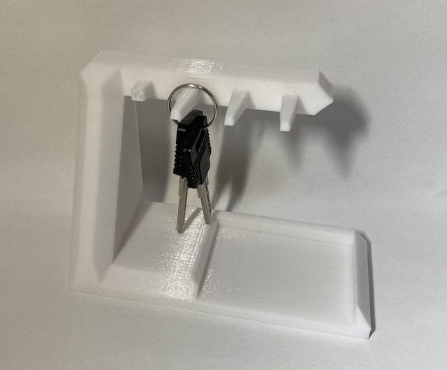
印刷はこの向きでおこなう
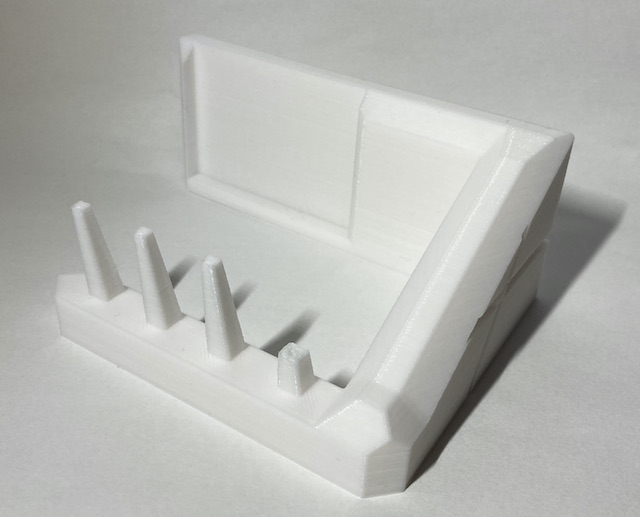
一番手前の部分が折れている。
そこだけ、なぜか印刷の密度がスカスカになっていて折れてしまった。
たまに一部分だけ密度がおかしくなることがあるが、理由はわからない
＜２＞
これはかなり成功したと思っている。
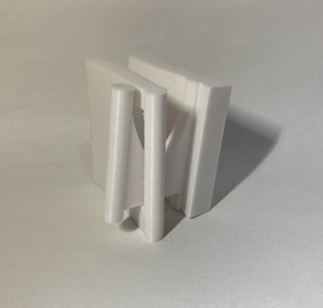 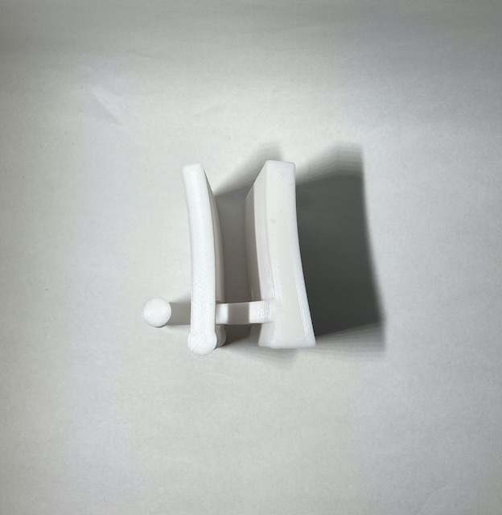
3Dプリントの特徴を用いて、一度に複数パーツ出すデザインである。
↓このように使います。
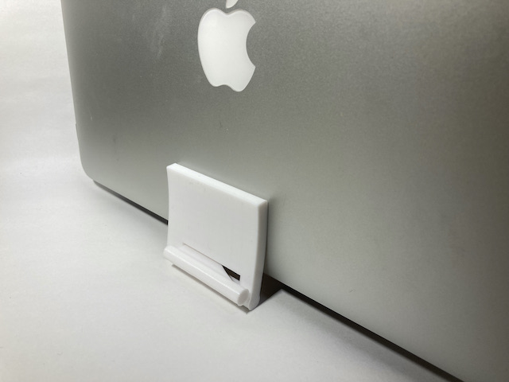
パソコンを立てることができる。サイズが小さいのでPCは横向きが安定する。
↓反対側から 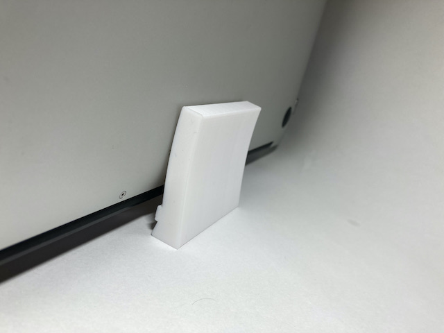
↓この向きで印刷した
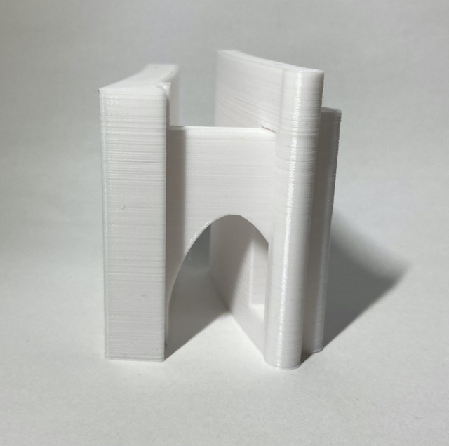
今回のポイントはこのまるで囲んだ部分である。
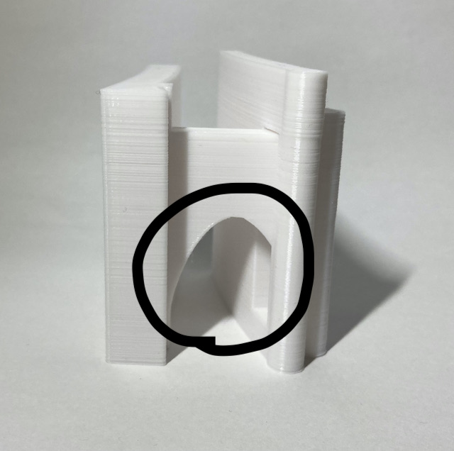
アーチ状にデザインしたことによって、下が空洞でもその上に印刷することができた。
複数のパーツを同時に印刷するときに困るのが、「パーツを外すとき」である。
土台がない空間には綺麗に印刷できない、しかしパーツをくっつけすぎると固まってしまい外せなくなってしまう。 そのようなジレンマがあったのだが、
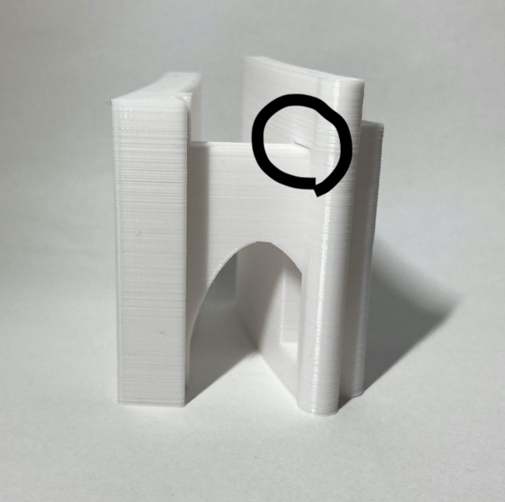
このデザインはパーツがくっついている部分がこの部分↑だけである。
なんの問題もなく外すことができたし、綺麗に印刷できている。
このように可動域を作ることである程度の大きさのPCまで対応できるようにしている。
＜3＞
こんな土台と↓
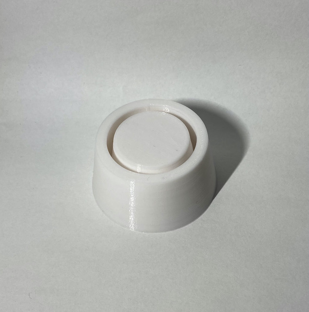
（2分で作図した）こんなものを
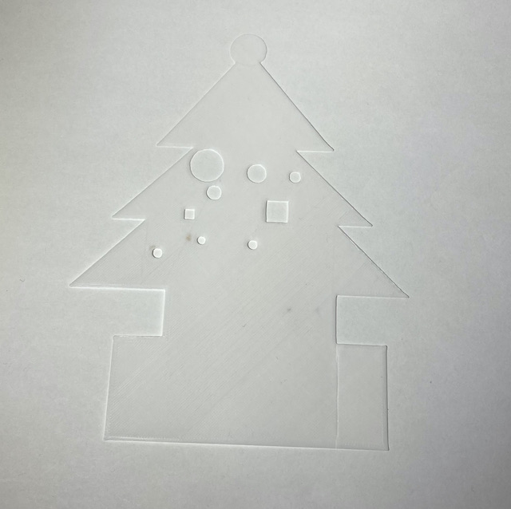
組み合わせて
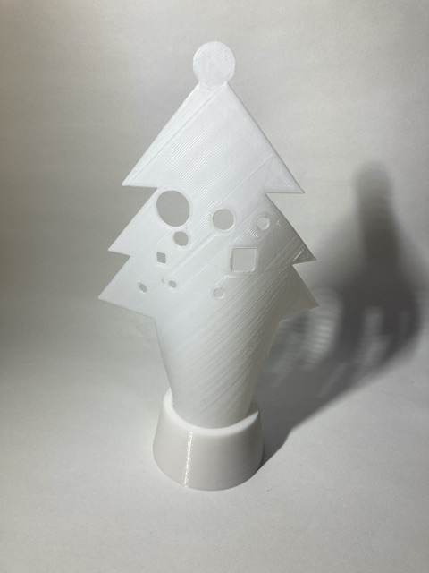
これができた。
ツリーの部分は 厚さ0,5mm がちょうど良さそう。0.6mm だとちょっと硬い。
3Dプリンターで2Dのものを作るのってなんなん という意見はあるが、
こんな可能性があるよということは示せたと思う。